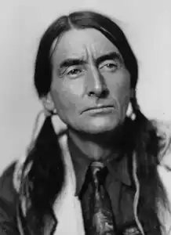

Сіра Сова (Grey Owl; автонім: Белані, Джордж Стенфілд. Дата народження 18.09.1888, Англія. Смерть — 13.04.1938, Саскачеван, Канада) — канадський письменник.Видавав себе за індіанця по материнській лінії, але згодом з'ясувалося, що це було вигадкою. Замолоду переїхав до Канади, де почав працювати провідником. Вивчав природу, був мисливцем, спостерігав за життям бобрів.
Сіра Сова змалечку цікавився природою, прагнув до життя у лісі, серед тварин. Життя і побут індіанців були для нього надзвичайно принадними — ймовірно, саме цим можна пояснити і містифікацію з його походженням.
У передмові до книги "Мандрівці нетрів " він пише, що усім завдячує "рідній природі". Нестерпним для Сірої Сови було усвідомлення того, що індіанців виганяють з їхньої рідної землі, що вирубують ліси, знищують чудову природу. Він глибоко переживав експансію цивілізації у канадські ліси, загибель багатьох індіанських племен. Будучи англійцем, Сіра Сова з юності жив як справжній індіанець. Разом зі своєю дружиною Анахорео, розумною й освіченою жінкою, котра належала до племені ірокезів, Сіра Сова провадив спосіб життя, традиційний для індіанської сім'ї, — вони жили у лісі, у маленькій хатині. Сіра Сова полював, його дружина займалася хатніми справами. Він навіть відмовився від радіоприймача, мотивуючи це тим, що радіохвилі впливають на погоду і, отже, можуть заподіяти комусь шкоду. Оскільки Сіра Сова жив відлюдником, окремо від суспільства, важко що-небудь дізнатися про його життя. Єдиним джерелом інформації залишається його власна біографія та інші книги Сірої Сови. Так сталося, що, полюючи на бобрів, Сіра Сова приручив двох бобренят, і вони стали членами його сім'ї. Він і його дружина піклувалися про бобренят, як про власних дітей. Пригодам з життя бобрів присвячені його відомі югиги "Саджо та її бобри" ("The adventures of Sajo and beaver people", 1935), "Сіра Сова" ("Grey Owl") та ін. Невдовзі після одруження у душі Сірої Сови відбувся переворот — він зрозумів, що не можна жити в гармонії з природою і при цьому стріляти у звірів, лаштувати для них пастки. Цей конфлікт став провідною темою творчості Сірої Сови. У книгах він пише про свою любов до бобрів, які жили у його домівці. Письменник сприймав їх не просто як тварин — не випадково ж індіанці називають бобрів "бобровим народом", "маленькими індіанцями", "балакучими братчиками". Внутрішньо протестуючи проти знищення лісів і вигнання індіанців, Сіра Сова поступово переконався й у тому, що полювання є не менш згубним для живої природи. Він з болем пише про особливо жорстокі способи вбивства тварин траперами і не може змиритися з таким бузувірством. Сіра Сова погодився на напівголодне існування, але назавжди відмовився від нелюдського винищення бобрового народу. Більшу частину свого часу він присвячував спостереженням за їхньою поведінкою. Він описує життя бобрів у своїх книгах, захоплюється їхнім інтелектом, виявляючи у них здібності до умоглядних висновків. У перекладі книги "Сіра Сова", либонь, не так гостро відчувається песимістичний настрій автора, однак йому щомиті доводиться долати внутрішню роздвоєність, він повсякчас страждає від суперечностей. Письменникові постійно доводиться бути свідком невгамовної жорстокості людей і бачити загибель бобрів, яких він так палко захищає. Сіра Сова приручає вже не тільки бобрів, а й сойок, ондатр, інших тварин. Спостерігаючи за ними, аналізуючи життя природного довкілля, Сіра Сова почав складати і записувати оповідання. Свої перші твори він читав прирученим бобрам, які уважно слухали його. За його власним зізнанням, Сіра Сова не надто добре знав англійську мову, а тому його оповідання не вирізнялися добрим стилем та невимушеністю викладу. Першим твором, запропонованим до друку, став нарис про Північну Канаду, її ліси, флору та фауну. Проілюструвавши нарис фотографіями, Сіра Сова надіслав його в Англію, на адресу свого знайомого, не сумніваючись у тому, що його перше творіння опублікують. І справді, через місяць він отримав свій нарис (щоправда, добряче скорочений) і гонорар. Журнал опублікував і нарис, і фотографії, зроблені Сірою Совою, а редактор запропонував надсилати нові кореспонденції та оповідання. Проте невдовзі після цього трапилася подія, що стала трагедією для Сірої Сови та його дружини, їхній давній друг, який не знав про те, що вони приручили бобрів і перестали на них полювати, перебив усіх тварин, що жили навколо хатини Сірої Сови. Так зруйнувалася мрія Сірої Сови про ідилічне сусідство бобра та людини, про мирне життя на лоні природи, де людина і тварини — брати. Потім Сіра Сова згадував, що зрозумів, чому так полюбив бобрів, лише тоді, коли почав писати про них книгу. Він усвідомив, що для нього бобри — уособлення індіанської раси, символ рідної природи. В індіанців відібрали все — землю, ліси; єдине, що продовжує пов'язувати їх із природою, — це бобри. Сіра Сова намагався збагнути природу через спілкування з цими тваринками. Та й власну літературну творчість він також сприймав як певний закон природи. Написавши повість про своїх загиблих бобрів, він відчував свою втрату не так гостро. Отримавши життя у книзі, маленькі бобри наче ожили для нього і знову увійшли до його оселі. Сіра Сова намагався досконаліше опанувати англійську мову, погодився нарешті й на те, щоб у будинку працював радіоприймач, хоча й надалі ставиться до будь-яких механізмів з великою осторогою. У поглядах Сірої Сови на тваринний світ було багато суперечливого і дивного — люблячи і захищаючи бобрів, він продовжував полювати на інших тварин. Якщо бобрів Сіра Сова майже ототожнював із людиною, то багатьох тварин, особливо хижих, він сприймав як звичайний індіанець-мисливець. Над цією суперечністю він замислився лише тоді, коли у пастку, налаштовану на видру, потрапив бобер. Сіра Сова ставав дедалі відомішим завдяки своїм оповіданням та нарисам, і якось до нього приїхали кінематографісти, щоби зняти фільм про бобрів. Згодом Сірій Сові запропонували посаду в Державному заповіднику. Про нього почали з'являтися статті в американських та англійських газетах. Здебільшого, автори цих публікацій схвально писали про Сіру Сову. Лише одного разу його звинуватили у плагіаті. Сіра Сова запекло заперечував це звинувачення, мотивуючи його безглуздість тим, що він не настільки добре знає англійську мову, щоби наслідувати стиль якогось іншого автора. Сіра Сова наполягав на тому, що писав свої книги сам, користуючись словником. Приблизно тоді ж він почав зустрічатися з іншими захисниками природи, вступив у товариства із захисту тварин, віддавав весь свій час та сили справі відтворення і збереження навколишнього середовища. Документальних свідчень про Сіру Сову збереглося небагато, головним серед них є його власні книги, які, звісно, хибують суб'єктивністю, проте, безперечно, написані чесно і щиро.Українською мовою ряд творів Сірої Сови переклала С. Павличко. H. Волкова